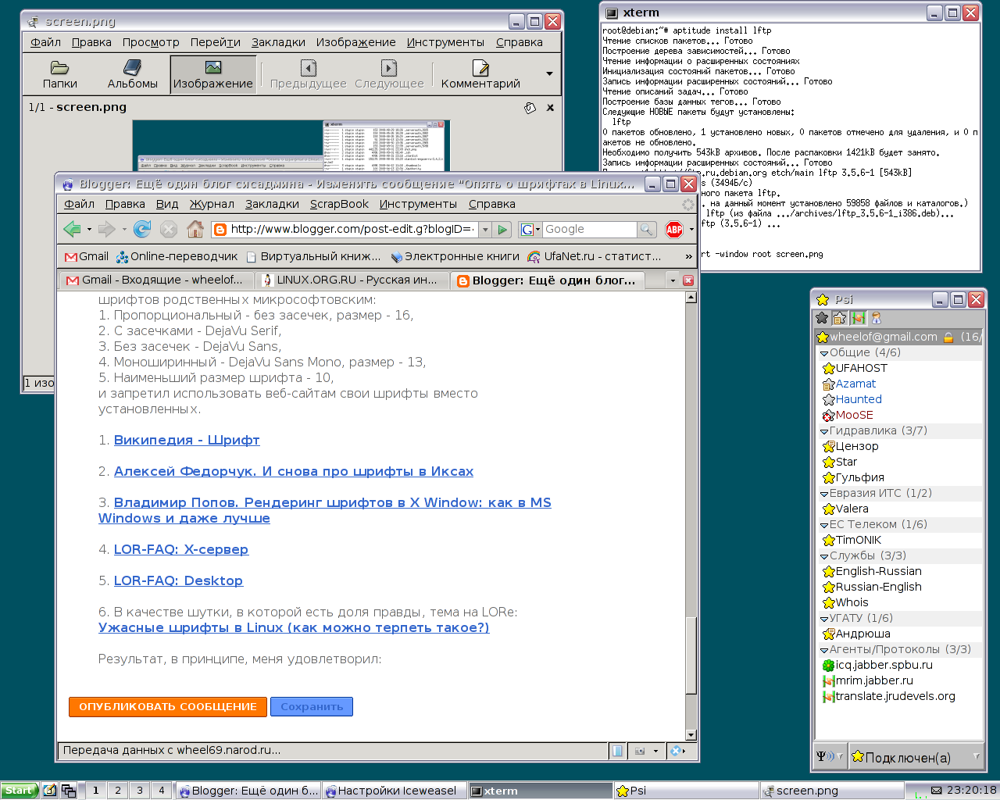

Проблема шрифтов для многих линуксоидов стоит особо остро. Надо признать, шрифты в Linux не особо радуют глаз человека, привыкшего к шрифтам Windows. Windows-шрифты по сравнению со шрифтами Linux кажутся чёткими, контрастными.
Впрочем, справедливости ради, стоит сказать что у меня проблема эта остро встала лишь в Firefox2, который использует библиотеки GNOME.
Кратко опишу те действия, которые я предпринял для настройки шрифтов.
1. В разных статьях советуют первым делом выставить в xorg.conf DPI в 96x96. Все мои попытки сделать это различными способами не удались. X-сервер попросту ложил на эти настройки и всё-равно использовал привычные ему 100x100. Возможно это связано с тем, что я использую фирменный драйвер nvidia и этот драйвер не воспринимает настройки DPI.
Посмотреть DPI запущенного X-сервера можно так:
$ xdpyinfo | grep resolutions resolution: 100x100 dots per inch
2. Советуют пересобрать библиотеку freefonts2 с поддержкой опции TT_CONFIG_OPTION_BYTECODE_INTERPRETER.
Как я выяснил, эта опция в Debian уже включена специальным патчем! (Это действительно так, я видел этот патч своими глазами!)
3. Советуют поиграться с настройками пакета fontconfig-config примерно таким образом.
# dpkg-reconfigure fontconfig-config
Первый экран: выбираем "Native" для шрифтов, которые установлены в Debian по-умолчанию, или Autohinter, если используются шрифты от Microsoft.
На втором экране выбираем: "Всегда" - если у Вас LCD-монитор (жидкокристаллический дисплей), и "Никогда" - если у вас CRT-монитор (электронно-лучевая трубка).
На третьем выбираем вариант "Нет" в любом случае, поскольку масштабирование матричных шрифтов всегда выглядит плохо.
Затем применяем сделанные изменения командой:
# dpkg-reconfigure fontconfig
И перезапускаем X'ы.
4. Выбрать каталоги со шрифтами в xorg.conf. Я у себя оставил лишь две строчки - fixed-шрифты, без которых X-сервер просто не запустится, и TTF-шрифты, которые хорошо масштабируются.
В секции Files остались две строчки:
FontPath "/var/lib/defoma/x-ttcidfont-conf.d/dirs/TrueType" FontPath "/usr/share/fonts/X11/misc"
5. Обычно советуют установить шрифты от Microsoft (разработанные фирмой Monotype), которые находятся в виртуальном пакете msttcorefonts. На самом деле это скрипт, который скачивает шрифты из официальных публичных источников и с помощью утилиты cabextract извлекает их из самораспаковывающихся cab-архивов, дополненных exe-декомпрессором :)
Сразу скажу, что шрифты эти я пробовал ставить, но они мне не понравились. В большинстве случаев шрифты выглядели вполне нормально, но в окне Firefox на некоторых сайтах они всё-таки выглядели ужасно.
Я поискал статьи о текущем положении со шрифтами в Linux. И к моему счастью, Алексей Федорчук, в своей статье (см. №2) меня обрадовал. Как оказалось, в Linux вполне хватает качественных шрифтов.
Шрифты Microsoft (они же Monotype) были мной снесены. Взамен я установил шрифты, имеющиеся в Linux:
# aptitude install ttf-bitstream-vera # aptitude install ttf-dejavu # aptitude install ttf-freefont # aptitude install ttf-linux-libertine # aptitude install xfonts-terminus
6. Советуют прописать в домашнем каталоге специально настроенный файл .gtkrc-2.0, но и его изменение не оказывало заметных на глаз изменений в шрифтах Firefox.
Чтобы добиться более-менее божеского вида шрифтов в Firefox, в его настройках я прописал использование следующих шрифтов родственных микрософтовским:
и запретил использовать веб-сайтам свои шрифты вместо установленных.
Результат, в принципе, меня удовлетворил (до этого было гораздо страшнее):
Как всегда, буду рад выслушать Ваши наблюдения и наработки по настройке шрифтов в Linux.